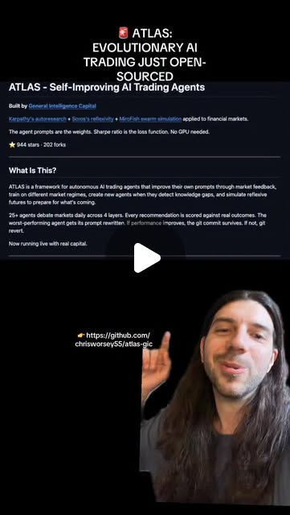
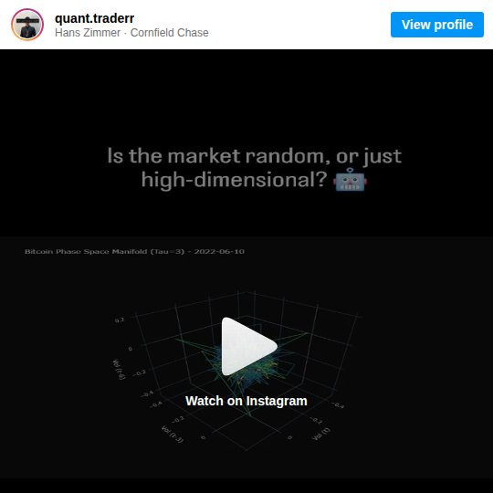
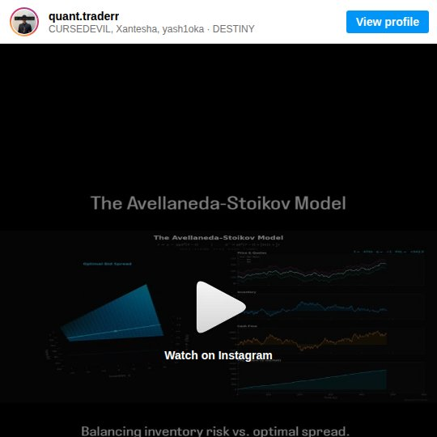
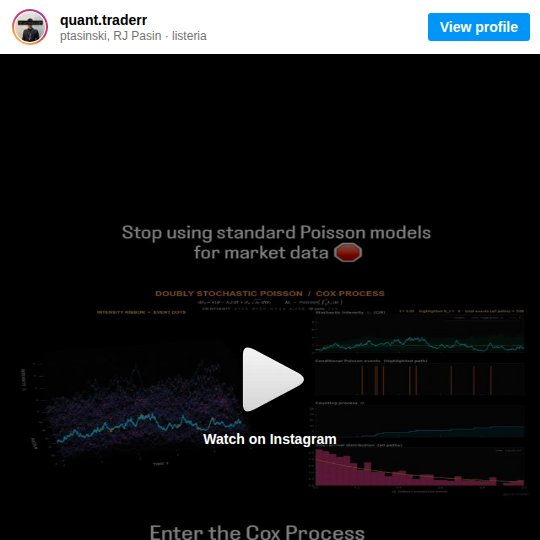

25 Agents Walk Into a Market: AI-Powered Trading Infrastructure
Try It — Action Sketch
Build regime detection with HMMs → layer Heston vol surface for options → add phase space reconstruction for hidden dynamics → implement A-S market making for execution → wrap in multi-agent debate system where agents specialize by model type → score on real P&L, not backtest metrics.
Connected Posts (6)





Prompt system — run this yourself
Pasteable into Claude Code, Claude, or any agent. One-shot for the whole result, step prompts when you want to steer. Every step carries its own audit; the gap audit makes the agent find and fill what it missed.
Mission. Build a multi-agent trading research system where specialist agents (HMM regime detector, Heston volatility surface, Cox-process event intensity, phase-space dynamics, Avellaneda-Stoikov market maker) feed a debate and a risk gate, then test whether debate adds anything over the specialists alone. For a quant-curious builder looking at swarms like atlas-gic. Done means: every specialist model is validated on its own, the debate system is compared against simple combinations and controls in a backtest that avoids LLM look-ahead, and only a capped paper arm runs until pre-set gates pass. No real money in this pack.
1 · Deeper, not bigger
- What a top professional would do (that you didn't ask for): A systematic trading lead would separate the quantitative models from the language-model layer and test each. They would recognize that an LLM backtested on dates inside its training data has seen the future, so LLM agents can only be evaluated forward or on data after the model's training cutoff. They would treat 'weakest agent gets its prompt rewritten, Sharpe decides survival' as a multiple-testing machine that will overfit noise unless gated by out-of-sample tests. They would require that debate beat a plain average of specialist signals, or remove it. They would set risk limits outside any agent's control.
- Rawest material to start from: 1) The atlas-gic repo (github.com/chrisworsey55/atlas-gic): its agent roles, layers, scoring, prompt-rewrite loop and how 'Sharpe decides commit survives or gets reverted'. 2) TauricResearch/TradingAgents repo and paper for a published multi-agent LLM trading design to compare. 3) Papers: Hamilton 1989 regime switching; Heston 1993; Cox 1955 and Cox-Ingersoll-Ross 1985 for intensity; Avellaneda and Stoikov 2008 'High-frequency trading in a limit order book'; Takens 1981. 4) Data: Binance klines and trades (data.binance.vision), order book snapshots if available, Deribit options for Heston, the model provider's published training cutoff date. 5) quant.dhawan's posts as claims to test: HMM states (low-vol bull, high-vol bear, recovery) 'better than lagging indicators'; A-S 'calculates optimal spread, not price direction'; Cox for 'bursty' trade arrivals.
- Methods and tools: hmmlearn GaussianHMM with forward-filtered probabilities for live use (not Viterbi on the full sample, which uses future data); QuantLib Heston calibration; CIR-intensity simulation and a Hawkes fit with the tick library for trade arrivals; nolds or teaspoon for embedding; an A-S simulator with inventory, reservation price r = s - q*gamma*sigma^2*(T-t) and spread from gamma, sigma, k, using hftbacktest or a custom queue-aware simulator; an LLM debate layer via the Claude API with structured JSON outputs; arch for SPA tests; exchange testnet or paper account for the forward arm.
- What proves it right: Each specialist reproduces its paper's behavior in simulation (A-S inventory stays mean-reverting, Cox simulation shows clustering vs Poisson). The debate system is compared against equal-weight specialist average and random controls on data after the LLM's training cutoff only. Hansen SPA across all prompt and agent variants. A 60-day paper arm with hard caps beating a parallel random control.
Rewritten prompt — ask for exactly that:
You are a systematic trading lead. Build and test, do not deploy. Specialists first, each as plain Python with its own validation: HMM regime detector (hmmlearn, filtered probabilities only), Heston calibration on Deribit BTC options (QuantLib), Cox/Hawkes intensity on trade arrivals, phase-space instability score, and an Avellaneda-Stoikov market-making simulator. Validate each against its paper on simulated and real data. Then add an LLM debate layer modeled on atlas-gic and TradingAgents: agents read specialist outputs, argue, and a risk agent outside the debate enforces limits. Compare four arms on data after the LLM's training cutoff: equal-weight specialist average, best single specialist, debate, random-entry control - with fees and slippage. Count every prompt rewrite as a variant and correct with Hansen SPA. If debate does not beat the plain average, say so. Paper-trade only: 1% of notional per position, 3% daily loss stop, 10% drawdown halt, 60 days minimum. No real money until those gates pass, and real-money code paths must raise.
2 · One-shot prompt
ROLE: You are a systematic trading lead and ML engineer. Stance: agents are a hypothesis on top of models; every layer must beat a simpler control after costs, and no real money moves in this project. CONTEXT: Source posts: marc.kaz on github.com/chrisworsey55/atlas-gic - '25+ autonomous agents debate every trading day across 4 layers', 'real-outcome scoring on every recommendation', 'weakest agent gets its prompt rewritten', 'Sharpe ratio decides: commit survives or gets reverted', 'detects regime shifts, spawns new strategies', 'runs on a $20/month VM with real capital'. quant.dhawan: HMMs deduce hidden states (low-vol bull, high-vol bear, recovery) and beat lagging indicators for strategy selection; Heston captures smile and skew; phase space reconstruction with tau=3 on BTC volatility; Avellaneda-Stoikov computes optimal spread from volatility, time horizon and inventory; Cox process with CIR intensity models bursty trade arrivals, defaults and vol spikes. Reference design: TauricResearch/TradingAgents. Tools: Python, hmmlearn, QuantLib, tick, nolds, hftbacktest, Claude API, arch. HARD CONSTRAINTS: No real orders; any real-key code path raises. LLM agents are evaluated only on data after the model's published training cutoff, or forward in paper. HMM uses filtered probabilities at time t, never smoothed or Viterbi paths over future data. Fees, slippage and funding in every backtest. Every prompt rewrite or agent variant is logged in VARIANTS.csv. Risk agent limits live in code outside any LLM's control: 1% notional per position, 3 concurrent positions, 3% daily loss stop, 10% drawdown halt. Never project returns. DELIVERABLES: 1. SOURCES.md: atlas-gic and TradingAgents architecture notes with file references; paper equations. 2. specialists/: hmm.py, heston.py, intensity.py, phase.py, as_mm.py, each with a validate() that reproduces paper behavior. 3. debate/: agent prompts, structured JSON outputs (view, confidence, evidence from specialist outputs only), a moderator, and a risk gate in plain code. 4. backtest/: four arms (specialist average, best specialist, debate, random control) on the post-cutoff window with costs. 5. STATS.md: SPA across VARIANTS.csv. 6. paper/: runner, caps, daily log, GATE.md. BUILT-IN GAP ANALYSIS: Keep GAPS.md: specialists that failed validation, look-ahead risks found, the atlas-gic claims you could or could not check (especially 'real capital' performance - there is no independent record), market-making realism gaps (queue position, adverse selection, latency), and costs of running agents per day. Fill what you can. SELF-QUESTIONS: Does the LLM know what happened on my backtest dates? Did I use Viterbi on the full sample anywhere? Does A-S still make money once adverse selection and queue position are modeled? Does the debate add information or just average opinions with extra cost? How many prompt rewrites did the evolution loop make, and what does SPA say? What does one trading day of debate cost in API tokens vs expected edge? STOP CONDITIONS: Stop when all specialists have validation results, the four-arm comparison and SPA are done, and the paper arm runs with caps. Stop early and report if no arm beats the random control after costs - that is a valid answer. RETURN FORMAT: Specialist validation table; four-arm results table with costs and intervals; SPA p-value; API cost per day; GAPS.md; and the line REAL MONEY GATE: CLOSED with the pass criteria.
3 · Step-by-step prompts
Step 1 — Ground truth: repos, papers, data and the training cutoff
Goal: Understand the real architectures and the evaluation window before coding.
Clone github.com/chrisworsey55/atlas-gic and TauricResearch/TradingAgents. For each, document in SOURCES.md: agent roles, layers, data inputs, how decisions are made, how agents are scored, how prompts are rewritten, how risk is enforced, and file paths for each. Note what evidence atlas-gic provides for 'real capital' results (logs, broker statements, or none). Collect the papers: Hamilton 1989, Heston 1993, Cox-Ingersoll-Ross 1985, Hawkes 1971, Avellaneda-Stoikov 2008, Takens 1981; write the key equations. Download BTCUSDT klines and aggregated trades from data.binance.vision, Deribit option snapshots if available. Look up the published training cutoff of the LLM you will use and define the LLM evaluation window as strictly after it. Write data/MANIFEST.md with ranges and gaps. Record the exact model id you will use for agents, since the cutoff and behavior change between versions.
Expect: SOURCES.md with both architectures mapped to files, equations list, data/MANIFEST.md, and an LLM window start date.
Audit before moving on: Every architecture claim cites a file and line range. If atlas-gic has no verifiable performance record, write that plainly. Confirm the LLM window has at least 6 months of data; if not, plan a forward-only paper evaluation.
Step 2 — Specialist models with paper validation
Goal: Five plain-Python specialists that each reproduce known behavior.
Write specialists/. hmm.py: GaussianHMM (hmmlearn) on daily returns and realized vol, 3 states, fit on train only; expose filtered state probabilities at time t using only data up to t; label states by mean and variance. heston.py: QuantLib calibration to option quotes; report RMSE in implied vol and parameter stability over 10 dates. intensity.py: simulate a CIR-intensity Cox process and a Poisson process with the same mean, show overdispersion; fit a Hawkes model with tick to real trade arrival times and report branching ratio. phase.py: choose tau by mutual information and dimension by false nearest neighbors, output an instability score; compare to surrogates. as_mm.py: Avellaneda-Stoikov with reservation price and optimal spread; simulate with a Poisson fill model, then with fills depending on queue and adverse price moves. Each file has validate() that prints numbers against expected behavior. Write SPECIALISTS.md.
Expect: Five modules, each validate() passing or failing with numbers, SPECIALISTS.md table.
Audit before moving on: Test hmm.py for look-ahead: compute state at t, append future data, recompute state at t; must be identical. For as_mm.py, record PnL with naive fills vs adverse-selection fills; if PnL flips sign, mark the naive result unrealistic.
Step 3 — Simple combinations and controls first
Goal: Set the bar the agent layer must clear.
Build backtest/engine.py: next-bar execution, Binance taker fees, 2 bps slippage, perpetual funding. Define a directional or exposure rule per specialist (e.g. HMM: long in low-vol bull state, flat otherwise; phase: cut exposure when instability above 80th percentile; intensity: reduce size when branching ratio spikes). Build arm A: equal-weight average of specialist signals. Arm B: best single specialist chosen on train. Arm C: random-entry with matched exposure (1,000 draws). Arm D: buy-and-hold. Freeze all parameters in PREREG.md. Run on train with walk-forward and on validation. Market making is evaluated separately in the as_mm simulator with fees and adverse selection. Report Sharpe, max drawdown, turnover, hit rate and payoff ratio per arm, and the random control's percentile for arms A and B. This is the bar: the debate layer in step 4 must beat arm A after its own API cost, or it is dropped.
Expect: PREREG.md committed, results for arms A-D on train and validation.
Audit before moving on: Double fees and re-run; mark cost-fragile arms. Confirm at least 30 trades per arm or flag low sample.
Step 4 — Debate layer with a code-enforced risk gate
Goal: An LLM debate that reads specialist outputs and cannot bypass risk.
Write debate/: 4-6 agents with fixed roles (regime analyst reading hmm.py output, volatility analyst reading heston.py, flow analyst reading intensity.py, dynamics analyst reading phase.py, a skeptic arguing against the consensus, a moderator). Each returns JSON: {view: long|flat|short, confidence: 0-1, evidence: [specialist fields cited]}. Agents get only specialist outputs and timestamps, never raw future data or news. The moderator produces a proposal; a plain-Python risk gate applies caps (1% notional, 3 concurrent, 3% daily stop, 10% drawdown halt) and can only shrink or reject. Log every debate to debate/logs/ with tokens and cost. Implement an atlas-gic-style evolution loop but gated: a prompt rewrite is a new variant in VARIANTS.csv, evaluated only on a rolling out-of-sample window, never on the window that triggered it.Expect: debate/ code, sample logs with JSON outputs, cost per debate, VARIANTS.csv started.
Audit before moving on: Fuzz the moderator with an extreme proposal (100% notional) and confirm the risk gate cuts it. Check that no agent prompt contains dates or prices after the decision time.
Step 5 — Four-arm comparison on the post-cutoff window
Goal: Find out whether debate adds anything.
Run arms A (specialist average), B (best specialist), C (random control), D (buy-and-hold) and E (debate) on the LLM window after the model's training cutoff only. Same costs and caps for all. Report Sharpe, max drawdown, turnover, hit rate, payoff ratio, and E's API cost per day. Compute Hansen SPA (arch.bootstrap.SPA) across all variants in VARIANTS.csv against arm A. Decide by the pre-registered rule: debate is kept only if it beats arm A after API costs and survives SPA. Also test whether the debate adds information: regress arm E's daily positions on arm A's and report how much of E is explained by the plain average. Sample 10 debate transcripts and check whether cited evidence matches the specialist outputs it names; count fabricated or misread citations. Write STATS.md and RESULTS.md.
Expect: RESULTS.md with five arms, STATS.md with SPA p-value and a keep or drop decision for debate.
Audit before moving on: Confirm no backtest date precedes the training cutoff for arm E. Recompute one arm's Sharpe by hand from the trade log. If debate wins only before costs, record drop.
Step 6 — Paper arm with hard caps and the money gate
Goal: Forward evidence without real money.
Build paper/runner.py on an exchange testnet or a paper account. Run the kept arm (debate or specialist average) plus a parallel random-entry control, daily, with the code-enforced caps. Log decisions, debate transcripts, fills, PnL and API cost. Write GATE.md: real money stays closed until at least 60 days and 30 trades, the kept arm beats the paper control net of API costs, live-vs-backtest return distributions are within the 95th bootstrap percentile of Wasserstein distance, and zero cap breaches. Any code path to a real-money key raises an exception. Run a fault test: inject a 10% gap and an API outage; confirm stops fire and the system flattens and halts. Set a daily API spend limit and halt debates when it is reached.
Expect: A running paper arm, logs, GATE.md, fault test output.
Audit before moving on: Grep for real endpoints or key loads; fail if present. Confirm the fault test log shows the halt.
Step 7 — Validate against oracles and write the gap report
Goal: Verdict per layer and an honest gap list.
Check oracles: specialist validations pass; arm comparison on post-cutoff data done; SPA result recorded; paper arm running with caps and fault test passed. Write REPORT.md: per specialist (validated or not, useful alone or not), debate verdict (keep or drop, with cost), market-making realism verdict, and atlas-gic claims checked (prompt rewriting as a multiple-testing risk, 'real capital' with or without evidence, $20/month VM vs your measured API cost). Write GAPS.md: look-ahead risks, data gaps, untested specialists, simulator realism gaps (queue, latency), and missing monitoring. Rank and fix the top two. Include a table of API cost per trading day vs the kept arm's paper PnL per day, so the economics are visible. End with REAL MONEY GATE: CLOSED and the criteria still unmet.
Expect: REPORT.md, GAPS.md, gate line.
Audit before moving on: Every verdict cites a file and number. Unrun oracles are FAIL-UNRUN. Remove any sentence implying expected profit.
4 · Gap analysis and audit
You did not build this system. Audit it from files: SOURCES.md, specialists/, SPECIALISTS.md, PREREG.md, VARIANTS.csv, RESULTS.md, STATS.md, debate/logs/, paper/, REPORT.md, GAPS.md. List every claim: specialist validation numbers, arm Sharpes, SPA p-value, debate keep/drop, API cost per day, paper results. Mark each VERIFIED (re-ran and matched), UNVERIFIED (why), or FALSE (show both numbers). Specifically: re-run the HMM look-ahead test; confirm every arm E date is after the LLM training cutoff; scan debate prompts for leaked future information; recompute one Sharpe from raw trades; confirm VARIANTS.csv counts every prompt rewrite; run the risk gate against a 100% notional proposal; grep for real-money endpoints and keys; confirm PREREG.md predates results in git. List missing pieces (no kill switch on API outage, no monitoring alerts, no capacity analysis, naive fill model), rank by risk of losing money if someone flipped the gate, fix the top three, and report what you could not fix and why. Restate the gate status.
Questions the agent must ask itself before it says done:
- Does the LLM's training data include my backtest window, and how did I exclude it?
- Is any HMM state at time t computed with data after t?
- Does the debate beat a plain average of specialist signals after API costs?
- How many prompt rewrites did the evolution loop make, and does the best survive SPA?
- Does Avellaneda-Stoikov still profit with adverse selection and queue position modeled?
- Is Heston calibration stable enough to be a feature, or noise?
- Does the Hawkes branching ratio on real trades differ from a Poisson baseline meaningfully?
- Can any agent output bypass the code risk gate?
- What does a day of debate cost, and what edge would it need to pay for itself?
- Is there any evidence for atlas-gic's 'real capital' performance, or only the claim?
- What happens on an exchange or API outage mid-position?
- Is there any code path from this repo to a real-money order?
5 · What proves it right
- Avellaneda and Stoikov 2008: simulator reproduces inventory mean reversion and the spread formula's dependence on gamma and sigma; PnL reported with and without adverse selection.
- HMM look-ahead unit test: state probabilities at t unchanged when future data is appended.
- Five-arm backtest on data strictly after the LLM's published training cutoff, with costs, and Hansen SPA across VARIANTS.csv.
- 60-day paper arm on a testnet or paper account vs a parallel random-entry control, zero cap breaches, fault test logged.
- Independent reviewer re-runs one arm from raw data and matches Sharpe within 0.05.
6 · Failure modes
- LLM look-ahead. Tell: debate looks brilliant on 2020-2023. Fix: evaluate only after the training cutoff or forward.
- Viterbi leakage. Tell: regime labels switch exactly at turning points. Fix: filtered probabilities only, plus the append-future test.
- Evolution overfits noise. Tell: frequent prompt rewrites, each 'improving' Sharpe. Fix: out-of-sample gating and SPA over all variants.
- Market-making fantasy fills. Tell: A-S profits with Poisson fills, loses with adverse selection. Fix: queue and adverse-selection fill model.
- Debate as expensive averaging. Tell: debate matches arm A at many times the cost. Fix: drop it.
- Risk inside the LLM. Tell: position sizes vary with agent mood. Fix: code-enforced caps outside agents.
- Unverified external results. Tell: 'runs with real capital' cited as proof. Fix: require logs or treat as claim.
7 · Agent direction (unattended runs)
Read the atlas-gic and TradingAgents code before any design; cache data as parquet. Build and validate specialists yourself or with one sub-agent each (separate files), then review each for look-ahead before use. Keep LLM evaluation strictly post-cutoff; enforce the date in code. Cache every debate transcript and its token cost. Spawn a fresh sub-agent with no context for the gap audit. Stop and ask before: connecting any exchange account, changing caps, re-opening the test window, or exceeding an API budget the human sets. Never place real orders; real-key paths raise. Use a cheaper model for routine agent turns only if it is evaluated as its own variant in VARIANTS.csv. Return REPORT.md, RESULTS.md, STATS.md, GAPS.md and paper/GATE.md with the gate status first.
Prompt system updated 2026-10-22 · all prompt systems · JSON